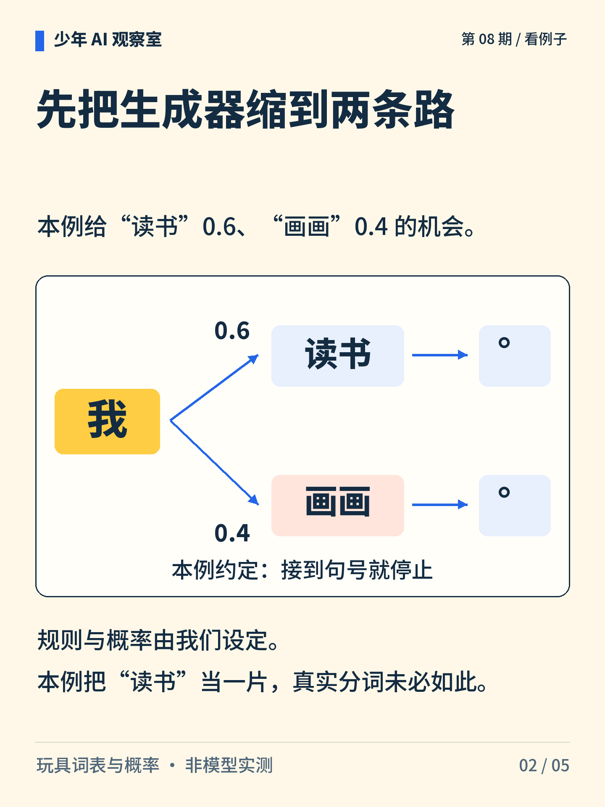
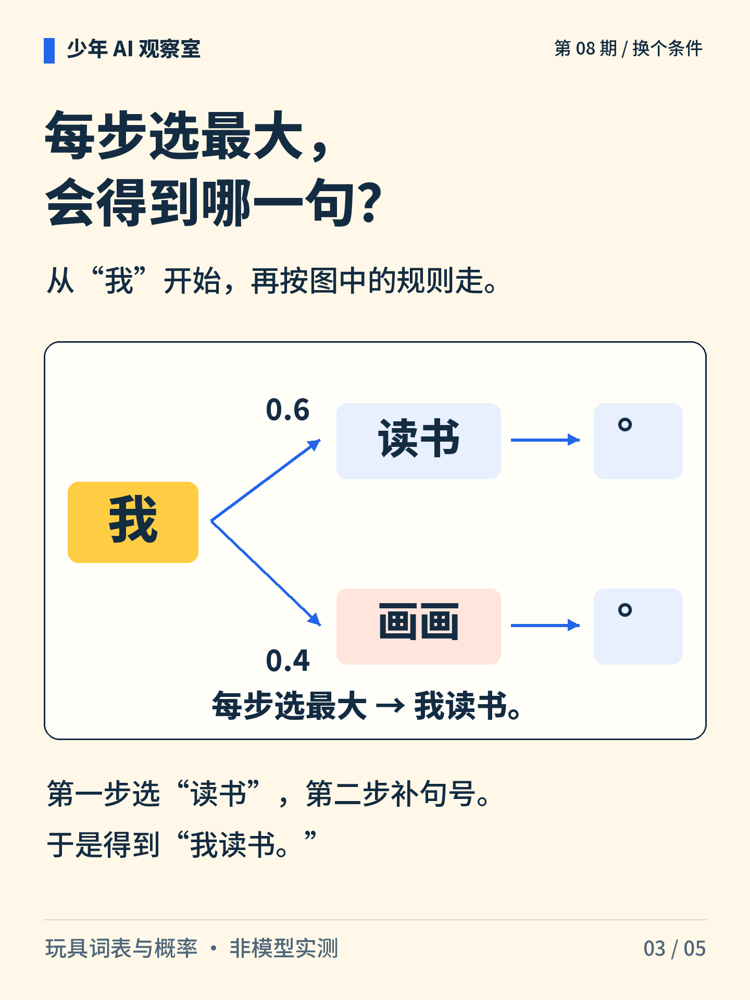
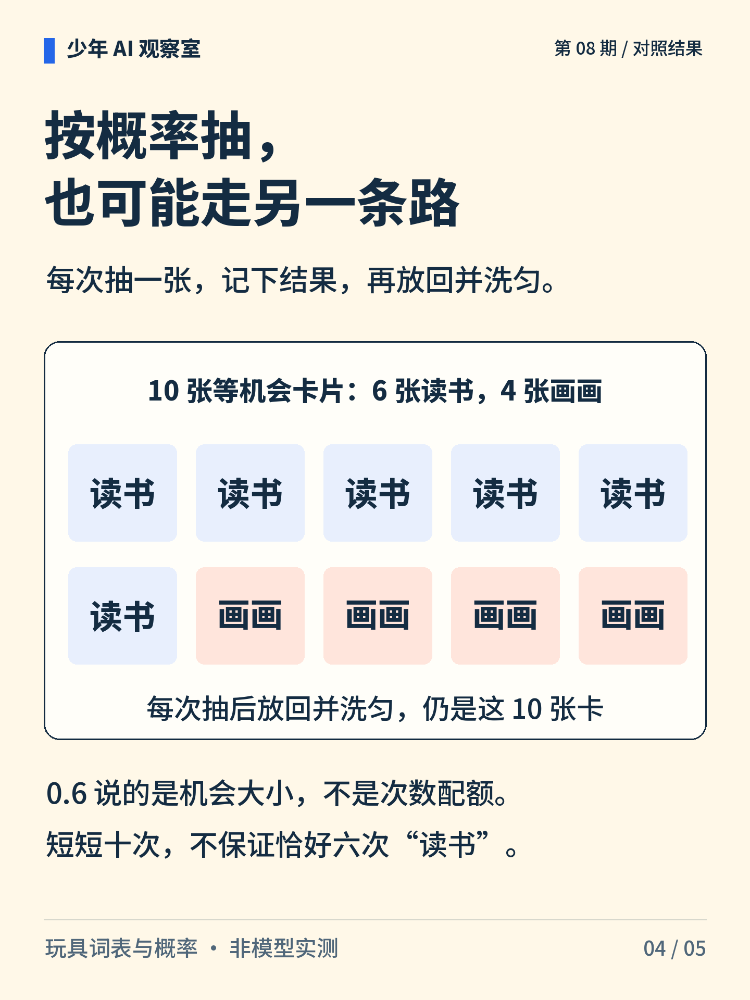
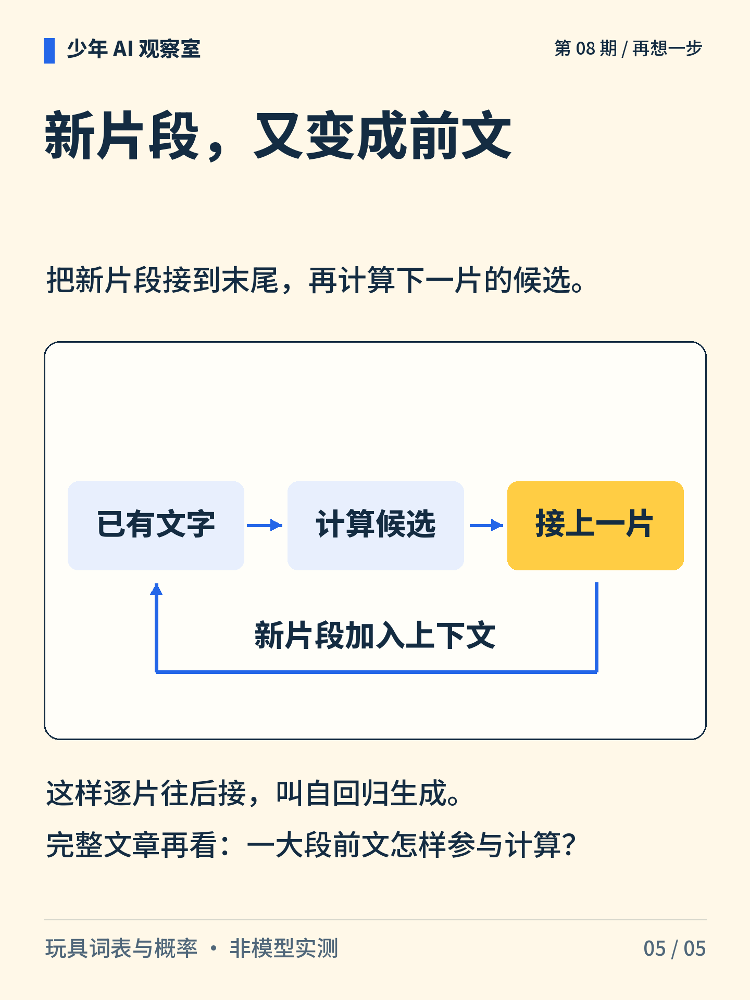

少年 AI 观察室 · 第 08 期
每次接一片，怎么写成一段话？
“我”后面可以接“读书”，也可以接“画画”。选出一片以后，它又会成为下一步的线索。

图解文字
“我”分成“读书”和“画画”两条路，再接句号，是玩具生成器的两种结果。

图解文字
从“我”开始，读书的概率为 0.6，画画为 0.4；两条路下一步都接句号并停止。

图解文字
每步选最大概率，先选“读书”，再接句号，得到“我读书。”。

图解文字
十张等机会卡片中六张为读书、四张为画画。每次抽后放回并洗匀，模拟相同概率下的重复抽样。

图解文字
已有文字→计算候选→接上一片，新片段进入上下文，供下一步计算。
想一想
“读书”的概率为 0.6，是否意味着十次里一定出现六次？
展开参考思路
不意味着。每次都从 6 张“读书”和 4 张“画画”中等机会抽一张，记下后放回并洗匀，“读书”的概率保持 0.6。十次的实际次数可以多于或少于六次。如果不放回并抽完全部十张，才会恰好得到六张“读书”。
概率描述机会；一次次按概率抽取，不是分配固定名额。
词表、切分和概率都是人为设定的。玩具规则只演示两条短句，并约定遇到句号停止；真实模型的分词、上下文计算和停止条件可能不同。
正文首图为 AI 辅助生成的概念插画；第 2—5 张图按核对过的文字与规则绘制。
延伸阅读资料
文中算例与图解用于说明原理，不是实际模型的测评结果。研究结论对应以下资料。〔1〕 Karpathy，2015，The Unreasonable Effectiveness of Recurrent Neural Networks（作者文章）。
https://karpathy.github.io/2015/05/21/rnn-effectiveness/
〔2〕 Hugging Face Transformers，GenerationConfig（官方文档；访问日期：2026-10-05）。
https://huggingface.co/docs/transformers/main_classes/text_generation
〔3〕 Brown 等，2020，Language Models are Few-Shot Learners。arXiv:2005.14165。
https://arxiv.org/abs/2005.14165
〔4〕 Hugging Face Transformers，Tokenization algorithms（官方文档；原题 Summary of the tokenizers；访问日期：2026-10-05）。
https://huggingface.co/docs/transformers/tokenizer_summary
书目信息沿用原稿，本轮未重新核验外部网页的可访问性。